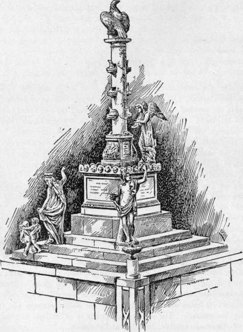

The Terrace
Description
This section is from the book "The National Capitol. Its Architecture Art And History", by George C. Hazelton, Jr. Also available from Amazon: The National Capitol Its Architecture Art and History.
The Terrace
Even after the erection of the grand marble wings and the elevation of the dome, the Capitol, except on the eastern front, had an unfinished appearance despite the sodded embankment which formed the old terrace, especially devised by Bulfinch. This was well described by Watterston in 1842 : " Proceeding through the western entrance of the Capitol you reach a spacious terrace, paved with Seneca freestone, and extending in a very beautiful sweep, from north to south. Beneath this terrace, which is below the level of the east front, is a range of casemate arches, forming depositories for the wood and coal annually consumed in the building. The terrace is faced with a grass bank or glacis, and accessible by two flights of stone steps on either side of the open arches leading to the basement story of the Capitol. Under the middle of these is a handsome marble fountain, from which the water, brought through pipes from springs about two miles north of the Capitol, falls into a beautiful basin of white marble, and thence flows into a reservoir cased with stone, and in which has been erected a monument [now at Annapolis] to the memory of young naval officers, Somers, Wadsworth, Israel, Decatur, Dorsey, and Caldwell, who gallantly perished off Tripoli, in 1804. It is a Doric pillar, with emblematic embellishments, etc., crowned with an eagle in the act of flying. The column ornamented with the prows of Turkish ves-sejs, rests on a base, on one side of which is sculptured in basso reliew a view of Tripoli and its fortresses in the distance, the Mediterranean and American fleet in the foreground. The whole monument is of Italian marble, and its sub-base of American marble, found near Baltimore.
" Further west is another fall or glacis, with stone steps, from the bottom of which three fine walks, paved with granite, lead to the principal western gates, one in the centre, one opening into the Maryland, and the other into Pennsylvania Avenue. On each side of the centre gateway are porters' lodges, which, with the stone piers to the gates, are constructed in the same style as the basement of the building. The public grounds around the Capitol are enclosed by an iron palisade or railing, bordered with a belt of forest and ornamental trees, shrul>s, and flowers, and laid out into walks neatly gravelled, and also planted with fine trees. On each side of the centre walk are two small jets d'eau, supplied with water from the reservoir above. A brick pavement extends along the wall, on the outside, upwards of a mile in length, and the square or public grounds form, in fine weather, one of the most beautiful promenades in this country".
THE NAVAL MONUMENT.
The present terrace, which greatly enhances the beauty of the building, was designed by, and constructed under the direction of, Edward Clark, the present distinguished architect of the Capitol. Clark was first initiated into office as the assistant of Walter, the architect of the extensions, and assumed his present position after the completion of the marble wings and the new dome, upon which his best energies and talents had been displayed in seconding Walter's plans.
The approaches were begun in 1882 ; the terrace itself was not commenced until two years later, nor finished until 1891. This grand esplanade, which extends along the entire north, south and west fronts of the Capitol, is built principally of Vermont marble. The large interior space secured to the building by means of this addition is occupied by electric plants and the furnaces and engines which heat the building, and by committee rooms and those devoted to the use of the custodian of art. The total cost of the terrace to the government has been about $750,000. The cost of the Capitol up to June 30, 1883, is estimated at $15,599,656, of which $703,455.80 is officially given as the cost of repairs upon the building from March 2, 1827, to March 3, 1875.
On summer evenings, when the heat drives the townsfolk from their homes, there is no more popular resort than the terrace-promenade. The gay summer dresses, and the chatter of the voices of the merry throng upon the steps and along the balustrade, counting the stars or gazing languidly down the long line of lights that mark the avenues and streets of the heated city, form quite an Italian picture. In hushed moments, the idler's ear catches rippling laughter from the shadow of some column, bespeaking the embrace stolen while a friendly cloud masks the moon. How to scholars the scene recalls Horace's drinking song for winter, in imitation of an ode from Alcaeus; for there the Roman poet in imagination invokes the pleasures of Youth, the camp and the promenade, and the enticing laughter of the maid coyly crouching in a corner or angle of the street or near houses of an evening in Rome, some two thousand years ago ! The world has not so much changed; for modern fancy whispers:
The night is still ; come wander, dear,
Along an old familiar way ; Mine arm about thee, once more hear
The old familiar lover's lay.
See, sweet, the moonbeams kiss the dome.
The great white dome, the peoples' shrine ; Along the esplanade we'll roam,—
'Twas there you promised to be mine.
See how the clouds throughout the west.
Still fond embrace each fleeting ray; So to my heart with man's poor zest.
I clutch thy heart ; it is my day.
See, love, the city careless sleeps,
Nor knows thy heart's the richest mine, Where Fortune's delver proudly reaps.
Bright golden hours of joy divine.
See yonder, love, the ivy clings.
Unto a bird-nest balcony,— Thence Fancy's wedding bell first rings,—
A dear old spot for you and me.
Come back, come back, my own sweetheart;
Along the terrace this night stray ; We'll play at love with youthful art,
And live again departed day.
The night is soft, the night is fair,—
Come wander there once more with me ; Oh, great dome-shadows be the lair,
For love-kiss as ye used to bel.
No Autumn cools the blood to-night,—
Rosalia's veins are May again ; Let heart thrill heart in pulse-born fright,
Love madly as you loved me then.
On nights when the moon is full and the great dome and columns &, a silvered by its rays, the whole pile appears like a cameo cut in the sky. The terrace is then a place of enchantment, and the night:visitor exclaims with Tom Moore-:
" Now look, my friend, where faint the moonlight falls On yonder dome, and in those princely halls".
Another occasion when the Capitol rises in dignity almost sublime in the midst of a great storm. To see the lightnings cleave the clouds and play harmlessly upon the iron dome, is a sight to dwell in memory forever. The sunsets, too, from the western steps, are unsurpassed in beauty, even in Veidce.
This terrace is the last touch upon the Capitol. The great pile to-day, although designed piece by piece under the direction of various architects, has none of the patchwork appearance common to so many of the great buildings of the world. From any one of the magnificent views to be had of the imposing structure, it presents the symmetry, unity and classic grace of a building designed and executed by one master mind. It has grown as the nation has grown. The corner-stone was laid by Washington in 1793 ; the terrace was finished nearly a hundred years later, in 1891 ; and yet the Capitol will never be complete while the nation lasts. The impress of each succeeding generation will be found upon its walls, marking the intellectual, artistic and governmental advancement of the age. The great pile is national, American, human. On its walls is written the nation's history. Its corridors resound to the footsteps of her living heroes and sages; its every stone echoes the departed voices of her greatest dead.
THE NATIONAL CAPITOI-WEST FRONT.
Continue to: